10 部片单 · 恐怖 / 科幻 / 惊悚 / 悬疑 / 剧情
| # | 片名 | 类型 | 评分 / 状态 |
|---|---|---|---|
| 01 | 变脸 | 科幻 / 动作 / 惊悚（美国 · 洛杉矶与联邦监狱之间的一次换脸） | 8.5 / 93% / 82 |
| 02 | 搏击俱乐部 | 剧情 / 惊悚（美国 · 一间地下室与一栋在建公寓） | 9.0 / 81% / 67 |
| 03 | 美国精神病人 | 恐怖 / 惊悚 / 黑色讽刺（美国 / 加拿大 · 1987 年曼哈顿上西区） | 8.0 / 68% / 64 |
| 04 | 谍影重重 | 动作 / 悬疑 / 惊悚（美国 / 德国 / 捷克 · 从地中海到巴黎的一条逃命线） | 8.6 / 84% / 68 |
| 05 | 猫鼠游戏 | 剧情 / 传记 / 犯罪（美国 / 加拿大 · 1960 年代全美各地的一场冒充人生） | 9.1 / 96% / 75 |
| 06 | 色，戒 | 剧情 / 爱情 / 惊悚（中国台湾 / 中国大陆 / 美国 / 中国香港 · 1938 香港与 1942 上海） | 8.4 / 72% / 61 |
| 07 | 风声 | 悬疑 / 惊悚 / 战争（中国 · 1942 年一座被软禁五人组的裘庄） | 8.4 / 7.3 |
| 08 | 锅匠，裁缝，士兵，间谍 | 剧情 / 悬疑 / 惊悚（英国 / 法国 / 德国 · 1973-74 年伦敦「圆场」的一间间办公室） | 7.9 / 84% / 85 |
| 09 | 我们 | 恐怖 / 惊悚 / 悬疑（美国 · 圣克鲁斯海滨的一栋度假屋） | 6.4 / 93% / 81 |
| 10 | 五分钱男孩 | 剧情 / 历史（美国 · 1962 年佛罗里达州塔拉哈西的一所少年管教所） | 6.3 / 92% / 91 |
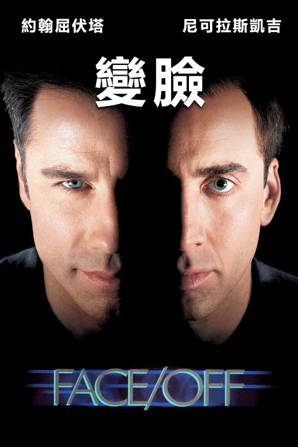
变脸 Face/Off
「要抓他，先变成他。」
剧情梗概
FBI 探员肖恩·阿彻六年前死在恐怖分子卡斯特·特洛伊手上的，是他五岁的儿子。如今卡斯特的弟弟波勒斯知道一枚毒气弹藏在城里，却死不开口。唯一的办法是换脸：让昏迷中的卡斯特披上肖恩的脸，替他把话套出来。手术成功了，计划进行到一半，卡斯特却提前醒来——他杀掉了所有知情人，顶替肖恩的身份活下去，还坐实了肖恩的恐怖分子罪名。现在，一个通缉犯拥有探员的脸、家庭和事业，而真正的肖恩被锁在监狱里，等着把自己的人生夺回来。
亮点
- 吴宇森闯好莱坞之后真正站稳脚跟的一部，成本约 8000 万美元，全球票房约 2.46 亿美元，还进了《时代周刊》年度十大佳片榜。
- 剧本由麦克·韦伯与迈克尔·科拉里写，核心设定只有一句话：两个人互换身份之后，好人要装坏人、坏人要装好人，而且双方都要演对方的整个人生。
- 约翰·特拉沃尔塔与尼古拉斯·凯奇实际是在「互相演对方」——你看到的每一场戏，都可能要再倒回来重读一遍，这是全片最大的观影乐趣。
- 第 70 届奥斯卡最佳音效剪辑提名（负于《泰坦尼克号》）；另拿土星奖最佳导演与最佳编剧、MTV 电影奖最佳动作场面与最佳银幕搭档。
- 吴宇森把港片那套推到极限：白鸽、双枪、慢镜，只不过这次是快艇、教堂与机库——抒情与暴力各占一半。
- 它直接催生了《无间道》：刘伟强当时想要一个更现实的版本，于是把「物理换脸」改成了「身份对调」。
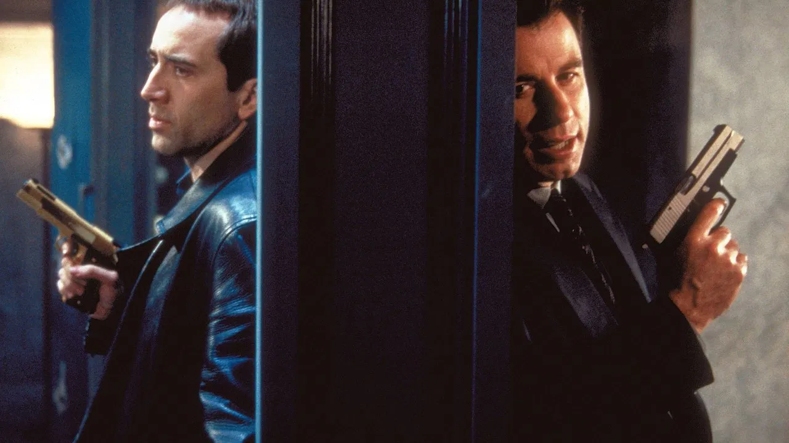
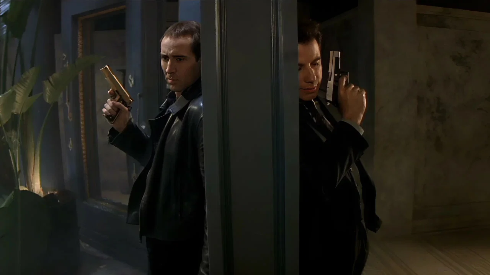
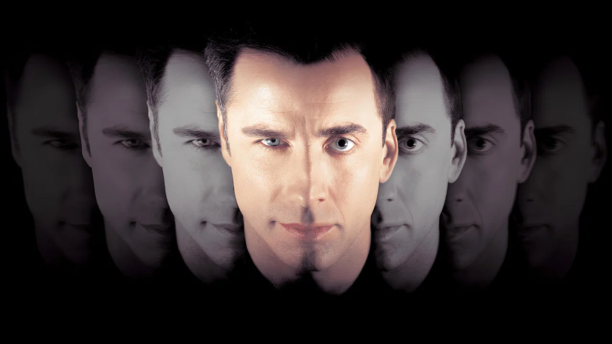
导演与主创 · 他们的历史作品
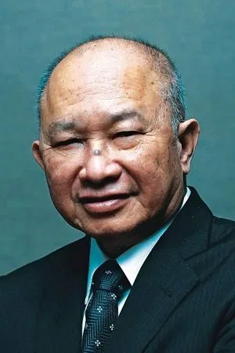
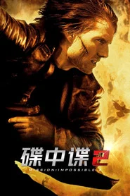
碟中谍2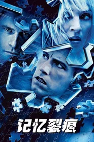
记忆裂痕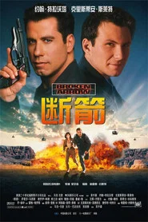
断箭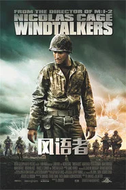
风语者
 低俗小说
低俗小说 闪电狗
闪电狗 油脂
油脂 剑鱼行动
剑鱼行动
 疯狂原始人
疯狂原始人 国家宝藏
国家宝藏 恶灵骑士
恶灵骑士 神秘代码
神秘代码短评（轻微剧透）
轻微剧透：全片最狠的一笔不在换脸成功，而在换脸之后——肖恩以卡斯特的身份在监狱里演戏，演得越像坏人，越没人信他是警察；而卡斯特披着肖恩的脸，第一件事是去吻他的妻子。轻微剧透：吴宇森让两个人互换的不只是名字，是「谁有资格被爱」：肖恩失去的是家人眼里的自己，卡斯特抢走的是勋章与客厅。结尾那场快艇追逐，是全片唯一一次让两个人都不戴面具地打——脸已经换回来了，观众却已经分不清谁是谁。
为什么值得一看
想看「身份互换能被推到多狠」的人；能接受设定经不起医学推敲、动作场面全面风格化、以及 138 分钟情绪饱满到近乎歌剧的观众。R 级，枪战与暴力场面密集，建议成年观看。内地未映，流媒体可看。看完想继续：《无间道》（往期第 23 期）、《剑鱼行动》、《致命魔术》（往期第 14 期）。
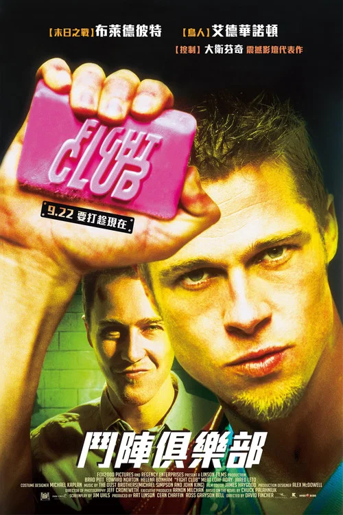
搏击俱乐部 Fight Club
「搏击俱乐部的第一条规则：不许谈论搏击俱乐部。」
剧情梗概
失眠的白领杰克靠参加绝症互助会骗眼泪入睡，直到假哭女玛拉出现，把他的觉也弄没了。飞机上他认识卖肥皂的泰勒·德顿——住在他对面的疯子、敢把电影胶片剪进儿童片里的人。某天两人在停车场互殴了一场，忽然所有人都想再来一次。搏击俱乐部从地下室一间开始，一座城市一座城市地长，最后长成了要烧掉信用卡记录中心的东西。而杰克渐渐发现：全城通缉的那个疯子，身份证上的名字是他自己。
亮点
- 大卫·芬奇导演，改编自恰克·帕拉尼克 1996 年的小说，吉姆·乌尔斯编剧——这是芬奇把「风格即叙事」推到顶格的一部。
- 成本约 6300 万美元，全球票房约 1 亿美元——院线是亏的，是后来的 DVD 租赁与电视重播把它养成世纪之交最大的邪典片之一。
- 第 73 届奥斯卡最佳音效剪辑提名；烂番茄 81% / Metacritic 67 / IMDb 8.8 / 豆瓣 9.0——本期豆瓣与 IMDb 双料最高。
- 皮特与诺顿在片中只真正同框几场戏，大部分「对手戏」是杰克一个人的独白；诺顿在访谈里说过，泰勒是谁这个问题，剧本从头到尾没打算偷偷藏住。
- 2022 年 1 月腾讯视频上线内地版，删了 12 分钟还改掉了结局，芬奇公开回应「如果不喜欢这个故事，为什么要买它呢」；后来平台把结尾还原了。
- 首映时的媒体评价两极，有影评人骂它是「深深的法西斯主义艺术作品」——二十多年后，这种骂战本身也成了它的一部分。
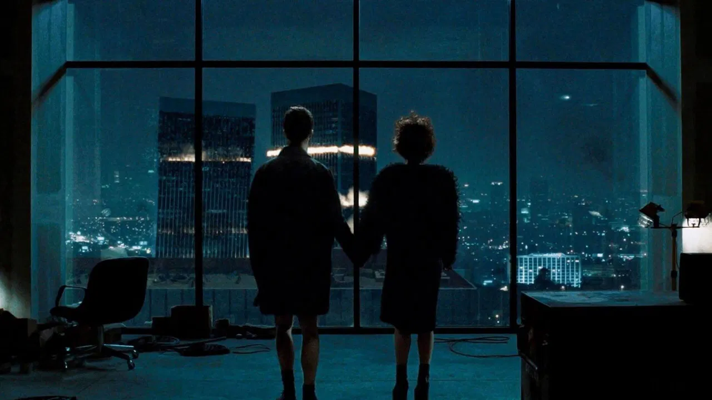
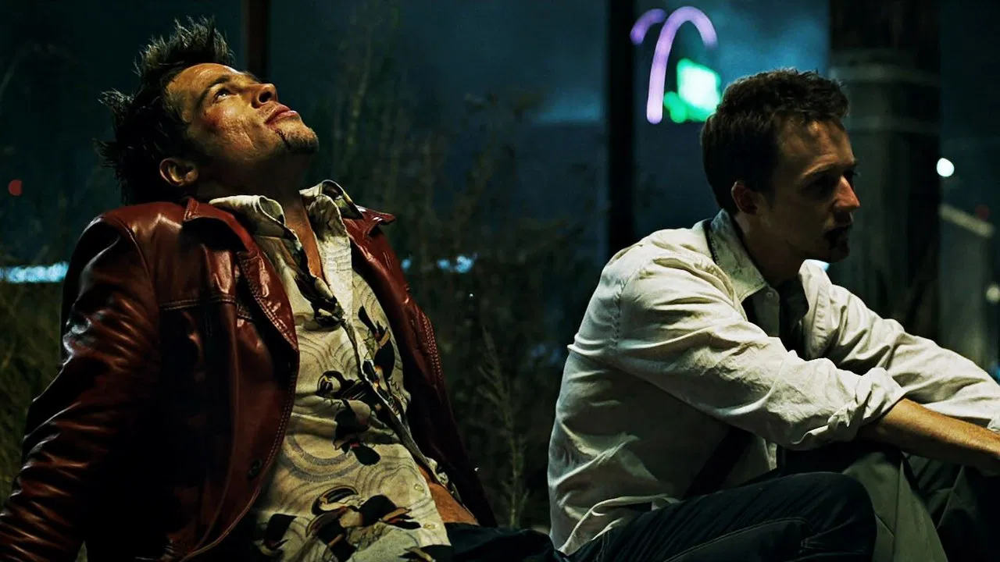
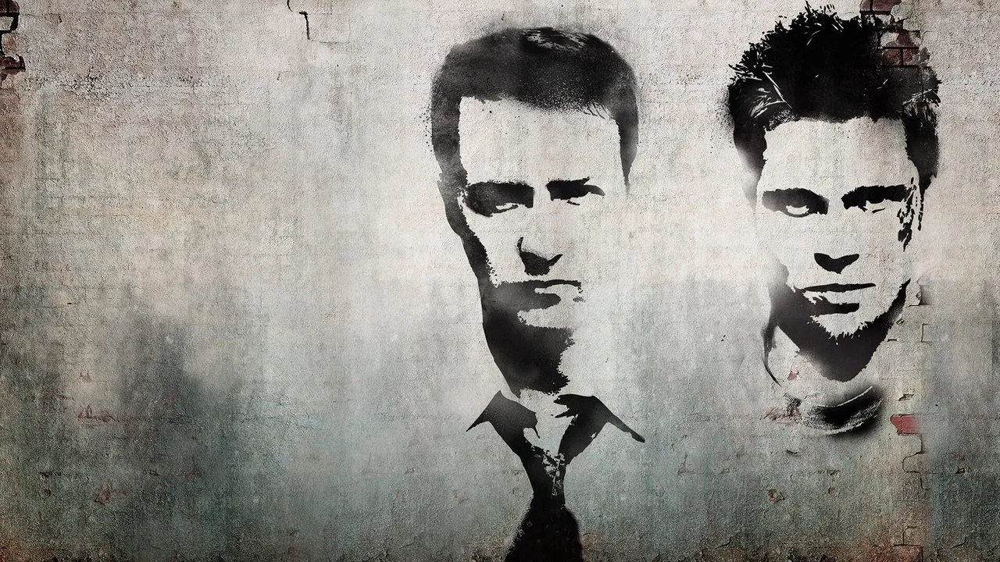
导演与主创 · 他们的历史作品

 七宗罪
七宗罪 消失的爱人
消失的爱人 本杰明·巴顿奇事
本杰明·巴顿奇事 社交网络
社交网络
 无敌浩克
无敌浩克 美国X档案
美国X档案 魔术师
魔术师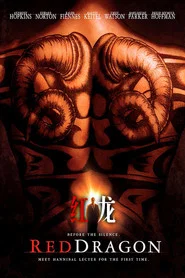
红龙
 无耻混蛋
无耻混蛋 僵尸世界大战本杰明·巴顿奇事
僵尸世界大战本杰明·巴顿奇事 狂怒
狂怒短评（轻微剧透）
轻微剧透：这部片的钩子从来不是「泰勒是不是幻觉」，是他为什么需要一个幻觉。轻微剧透：芬奇最狠的一处是把消费社会拍成一场失眠——杰克的家就是宜城样板间，每件东西都在告诉他该成为谁；而泰勒是他唯一一件「没有品牌」的所有物。结尾大楼一扇扇亮起的窗，是全片唯一一次让两个人同时出现在画面里，也是唯一一次让观众确认：这个幻觉已经比本人活得更好。
为什么值得一看
想看「人格分裂能被拍成多大的时代寓言」的人；能接受暴力场面直接、旁白密、价值观危险且刻意不给出安全答案的观众。R 级，建议成年观看。内地未映（流媒体版本有删改历史）。看完想继续：《美国精神病人》、《一级恐惧》（往期第 18 期）、《穆赫兰道》（往期第 13 期）。
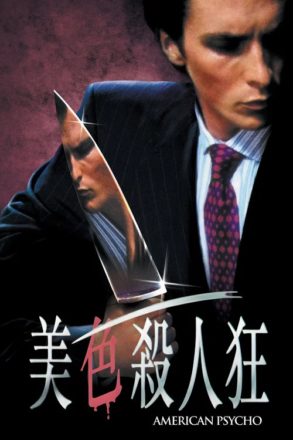
美国精神病人 American Psycho
「我只是想把一切做得体面。」
剧情梗概
帕特里克·贝特曼，华尔街投资银行副总裁，二十七岁，英俊、富有，每晚都在正确的餐厅订正确的位子。他对名片纸张的执着超过对任何同类的关心，对护肤流程的熟悉超过对母亲的问候。天黑之后他还有另一份生活：杀人。问题在于他身边的每个人都长得一样、说得一样、记不住对方的名字——所以当他终于向律师自首时，对方只当他在开玩笑。
亮点
- 玛丽·哈伦导演并与吉尼维尔·透纳联合编剧，改编自布莱特·伊斯顿·埃利斯 1991 年那本「没法改编」的小说。
- 成本约 700 万美元，全球票房约 3400 万美元——以小博大的邪典教科书，贝尔则凭它拿下一串影评人协会奖，从此进入一线。
- 贝尔为角色练出的体脂与笑容是全片最著名的「特效」：那张脸在说「我很好」的时候，观众后背发凉。
- 本片在圣丹斯首映时评价两极，《纽约时报》称之为「刻薄而精瘦的恐怖喜剧经典」；罗杰·伊伯特给出三星，说贝尔「乐于跳进卑劣里，毫无自保本能——这是好演员的标志」。
- 结局是故意不给你答案的：那些谋杀到底发生没有，小说和电影都拒绝确认，而这恰恰是全片对「没人在乎」这个主题最狠的一次执行。
- 烂番茄 68% / Metacritic 64 / IMDb 7.6 / 豆瓣 8.0：专业与观众评价都不算高，但它是本期被引用、被模仿、被做成迷因最多的一部。
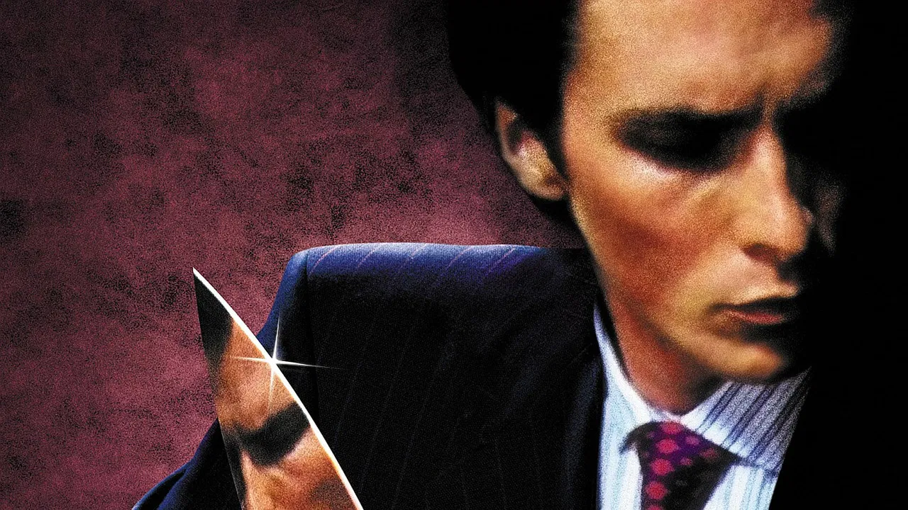
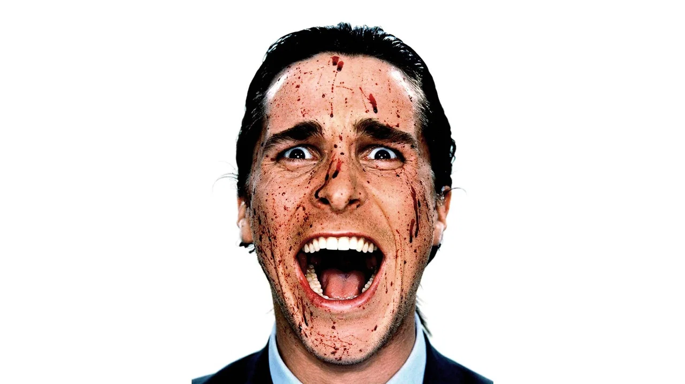
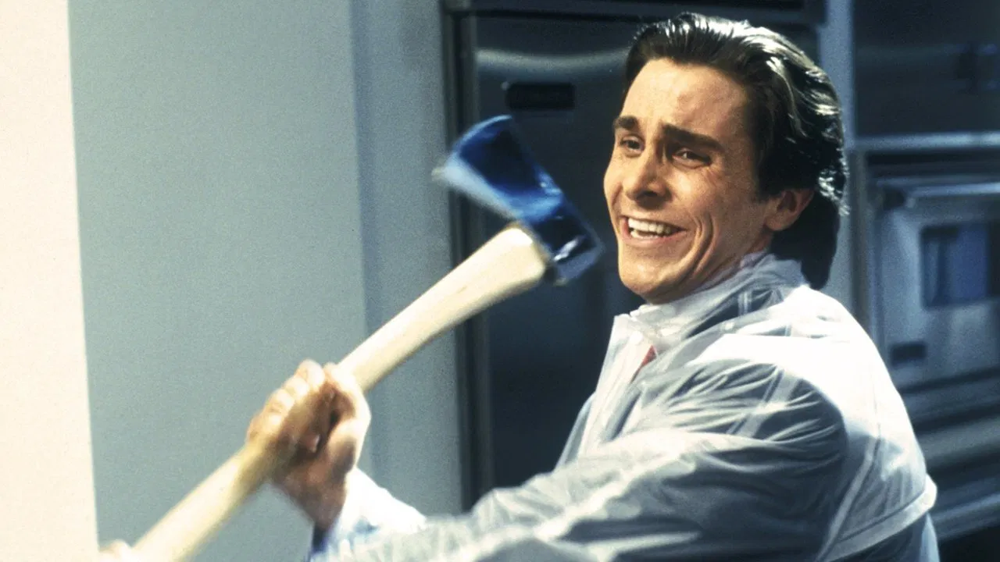
导演与主创 · 他们的历史作品
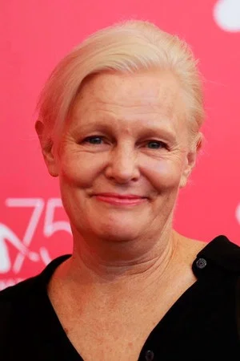
 查理说
查理说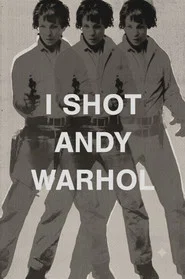
我杀了安迪·沃霍尔
 蝙蝠侠：黑暗骑士
蝙蝠侠：黑暗骑士 蝙蝠侠：黑暗骑士崛起
蝙蝠侠：黑暗骑士崛起 蝙蝠侠：侠影之谜
蝙蝠侠：侠影之谜 致命魔术
致命魔术
 蜘蛛侠
蜘蛛侠 疾速追杀
疾速追杀 海底总动员
海底总动员 海王
海王短评（轻微剧透）
轻微剧透：全片最恐怖的一场戏是名片——四个人站着比较谁的名片更体面，而观众已经看过贝尔前一小时干了什么。轻微剧透：哈伦最聪明的一处，是让「双重生活」不再是秘密：所有人都看得见贝特曼在装，只是没人有空拆穿。结尾他听着音乐坐下，那句「没有所谓的出路」被当成笑话讲出来——这是全片唯一一次让观众和他一起笑，也是唯一一次让人意识到，他可能真的是在求救。
为什么值得一看
想看「讽刺能被演得多精确」的人；能接受暴力场面冷酷直接、价值观极度不适、以及它本质上是一部关于一九八零年代美国的恐怖喜剧的观众。R 级（未分级版更重），建议成年观看。内地未映。看完想继续：《搏击俱乐部》、《消失的爱人》（往期第 13 期）、《狗镇》。
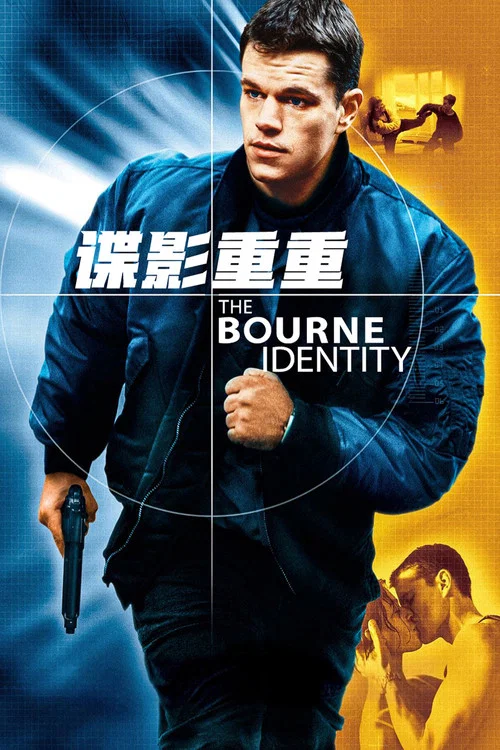
谍影重重 The Bourne Identity
「为什么我知道那个人是左撇子？为什么我知道这些，却不知道我是谁？」
剧情梗概
一艘渔船在地中海捞起一个身上带枪、臀部嵌着激光定位账户号码的男人。他醒了，什么都不记得，却会说四国语言、会用一本书和一支笔放倒一个特工、能在三秒内记住一条街上所有的车牌。他叫杰森·伯恩——至少账户是这么写的。而他每查到一个线索，就多一个人来杀他；他每逃过一轮追杀，就多一分证据表明：追杀他的不是敌人，是他自己的过去。
亮点
- 道格·里曼导演，托尼·吉尔罗伊参与编剧，改编自罗伯特·鲁德鲁姆的同名小说，整个系列的处女作；成本约 6000 万美元，全球票房约 2.14 亿美元。
- 本片重新定义了千禧年以后的动作片语法：手持摄影、快速剪辑、实战格斗——「特工」从此从礼服晚宴回到尘土里。
- 马特·达蒙此前是文艺片与冲奥片里的面孔，这部片让他直接多了一条「能打」的戏路；弗朗卡·波滕特演的玛丽，是全系列唯一一个让伯恩慢下来的人。
- 克里夫·欧文演的「教授」只有一场戏——那场处决戏是系列里最常被剪出来反复观看的片段。
- 内地 2002 年 11 月 22 日全国同步上映（进口大片停映 50 天后重新登陆的批次之一），长春电影制片厂译制，是很多内地观众在大银幕上看到的第一部「失忆特工」。
- 豆瓣 8.6 / 烂番茄 84% / Metacritic 68 / IMDb 7.8：本期四项评分最均衡的一部；从续集《谍影重重2》起，导演换成了保罗·格林格拉斯。
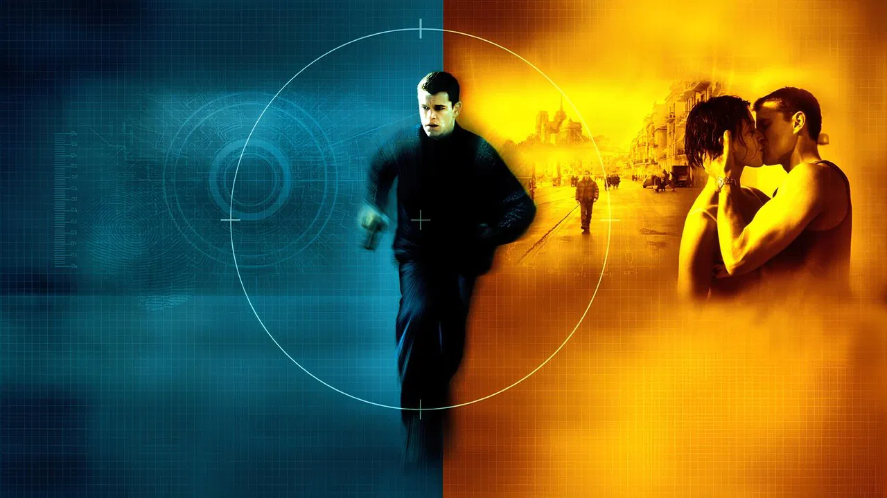
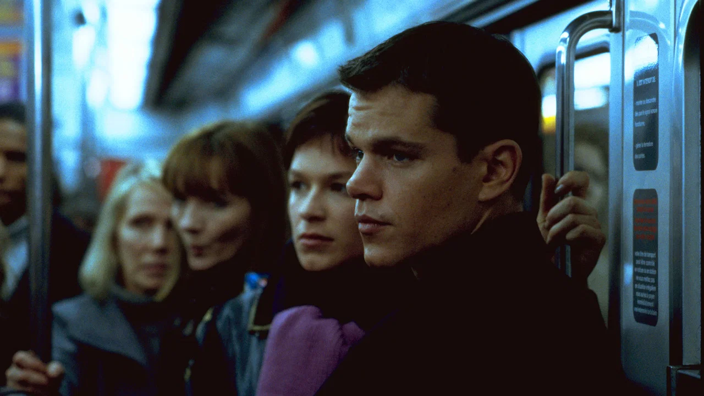
导演与主创 · 他们的历史作品

 明日边缘
明日边缘 史密斯夫妇
史密斯夫妇 心灵传输者
心灵传输者 美国行动
美国行动
 火星救援
火星救援 心灵捕手
心灵捕手 极乐空间
极乐空间 极速车王
极速车王
 谍影重重2
谍影重重2 罗拉快跑
罗拉快跑 大毒枭
大毒枭 地铁惊魂
地铁惊魂短评（轻微剧透）
轻微剧透：全片的转折不在「他想起了什么」，在他决定不再想——从巴黎那间安全屋出来之后，伯恩追的不再是身份，是「不当武器」这个选项。轻微剧透：里曼最有效的一处是把失忆拍成道德问题而不是悬念问题：每次回忆回来一点，观众就多一分理解他为什么想不起来。结尾他在地中海边找到玛丽时的那个笑，是全片唯一一次让这个人拥有名字之外的身份——一个普通人。
为什么值得一看
想看「失忆能被拍成多大的道德困境」的人；能接受动作场面粗糙写实、阴谋线故意不解释、以及它本质是一部「系列开篇」所以留了很多尾巴的观众。PG-13。内地公映过，流媒体可看。看完想继续：《明日边缘》（往期第 20 期，同一位导演）、《谍影重重2》、《谍影重重3》。
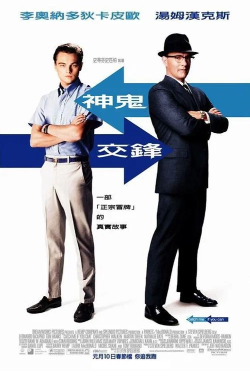
猫鼠游戏 Catch Me If You Can
「两只老鼠掉进一桶奶油里。第一只放弃了，淹死了；第二只拼命划啊划，把奶油搅成了黄油，爬了出来。」
剧情梗概
十六岁的弗兰克·阿巴格纳尔在父母离婚、家产败光的那天晚上离家出走。他发现全世界最好骗的东西不是钱，是「身份」：一套制服、一张证件、一个自信的微笑，就能让他当上泛美航空的机长、医院的儿科主治、律师事务所的毕业生。FBI 探员卡尔·汉拉蒂追了他五年，两个人越追越像——而弗兰克每换一个身份，就离家更远一点。
亮点
- 斯皮尔伯格导演，杰夫·内桑森编剧，改编自弗兰克·阿巴格纳尔本人的自传——这是斯皮尔伯格最「轻」的一部电影，也是他最不含糊的一部。
- 成本约 5200 万美元，全球票房约 3.52 亿美元；第 75 届奥斯卡最佳男配角（克里斯托弗·沃肯）与最佳原创配乐（约翰·威廉姆斯）两项提名，沃肯另拿英国电影学院奖最佳男配角。
- 弗兰克在片里冒充过副机长、儿科医生、律师、教师——每一种身份都配齐一套完整的谈资与手势，表演乐趣全在「下一秒会不会露馅」。
- 汤姆·汉克斯演的汉拉蒂是全片的定海神针：一个每年只在圣诞夜加班、打电话回家没人接的孤独探员——追捕到最后，他成了弗兰克唯一稳定的关系。
- 内地 2003 年 4 月 11 日上映，是很多内地观众第一次在大银幕上看「高智商诈骗」题材；约翰·威廉姆斯的配乐被乐评人视为他后期最灵动的作品之一。
- 豆瓣 9.1 / 烂番茄 96% / Metacritic 75 / IMDb 8.1：本期四项评分全部居前，也是本期口碑最齐的一部。
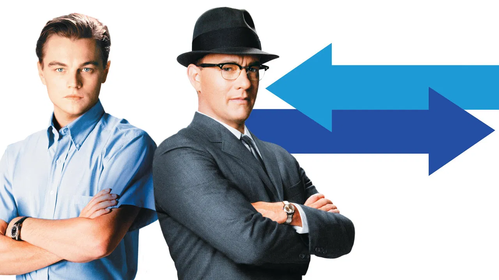
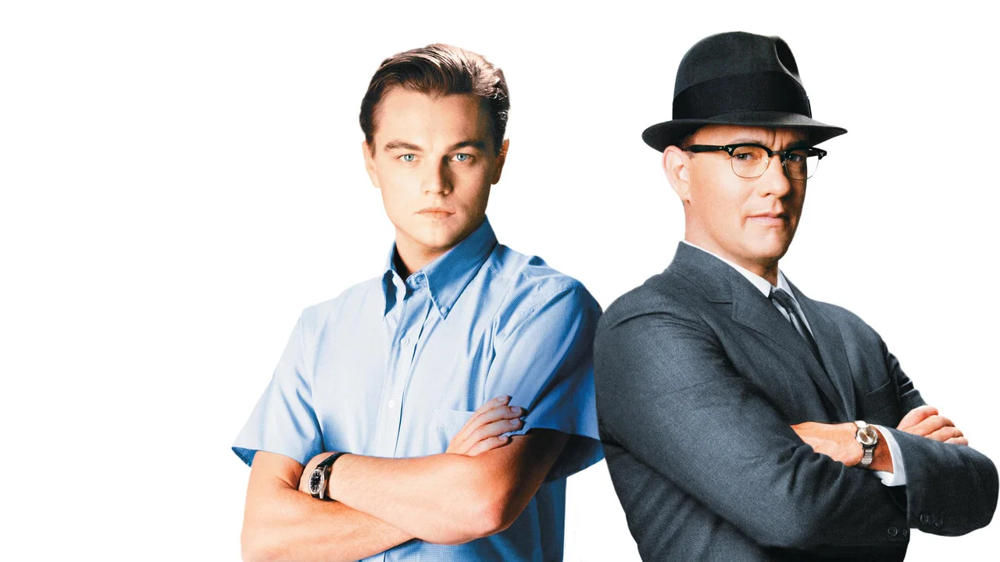
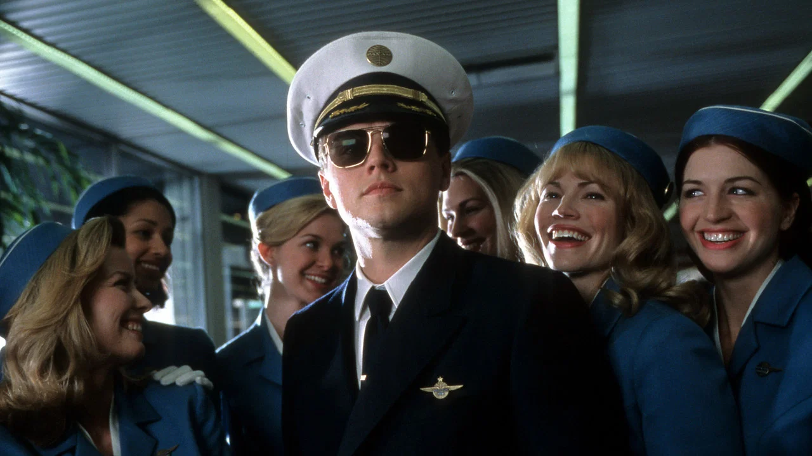
导演与主创 · 他们的历史作品

 侏罗纪公园
侏罗纪公园 辛德勒的名单
辛德勒的名单 拯救大兵瑞恩
拯救大兵瑞恩 头号玩家
头号玩家
 盗梦空间
盗梦空间 泰坦尼克号
泰坦尼克号 华尔街之狼
华尔街之狼 禁闭岛
禁闭岛
 阿甘正传
阿甘正传 玩具总动员
玩具总动员 绿里奇迹拯救大兵瑞恩
绿里奇迹拯救大兵瑞恩短评（轻微剧透）
轻微剧透：全片最疼的一场戏不是被捕，是弗兰克从跑掉的飞机上被押下来时回头望的那一眼——他终于又有机会当个正常人，代价是承认前面所有人生都是借的。轻微剧透：斯皮尔伯格把「奶油与两只老鼠」那个比喻留给结尾的圣诞夜：汉拉蒂放他走的那几分钟，是全片唯一一次让两个人都不再扮演任何角色。故事原型弗兰克·阿巴格纳尔后来真的为 FBI 做了几十年反诈骗顾问——电影结尾那句字幕，是这部片最温柔的一笔。
为什么值得一看
想看「骗术能被拍得多么优雅」的人；能接受主角光环偏大、部分情节为了好看而加速、以及它本质上是一部合家欢 PG-13 的观众。建议初中以上观看。内地公映过，流媒体可看。看完想继续：《一级恐惧》（往期第 18 期）、《逍遥法外》原著、《惊天魔盗团》。
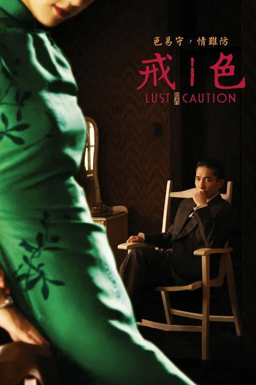
色，戒 Lust, Caution
「快走。」
剧情梗概
岭南大学话剧团的几个学生决定为抗战做一件实事：刺杀汪伪政权的特务头子易先生。办法是美人计——漂亮的女学生王佳芝化名「麦太太」，一点点接近易太太，再让易先生自己走进来。第一次行动在易先生突然调去上海时流产；三年后他们在上海重来一遍。而这一次，戏越演越真：她每晚都在演一个不存在的女人，只有在他面前不必演——于是那句「快走」，把所有人的命都换了。
亮点
- 李安导演，王蕙玲与詹姆士·沙穆斯编剧，改编自张爱玲 1979 年的短篇；威尼斯电影节金狮奖——李安继《断背山》之后第二次拿到金狮。
- 成本约 1500 万美元，全球票房约 6700 万美元；剧组为重现老上海，花 2000 万重建了南京西路一段 800 米的街面、搭了 13 幢楼。
- 梁朝伟凭易先生拿到第三座金马影帝，完成史无前例的三连；汤唯则从这部片开始，成为华语影坛近二十年最受讨论的新面孔之一。
- 三段床戏是这部片被谈论最多的部分，李安自己的说法是「拍的不是情欲，是权力」——第一场是搜身，第二场是拉锯，第三场才是交付。
- 美国 NC-17、中国台湾限制级、中国香港三级；内地公映的是 145 分钟删减版（比完整版短约 13 分钟），是本片唯一在内地公映过的版本。
- 豆瓣 8.4 / 烂番茄 72% / Metacritic 61 / IMDb 7.5：华语口碑明显高于欧美专业评价，是本期落差最大的文艺片。
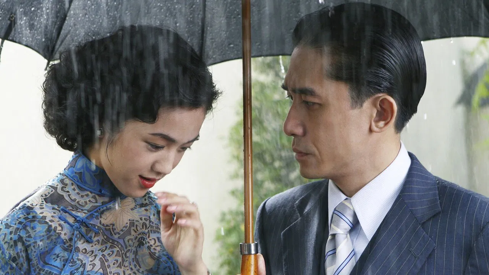
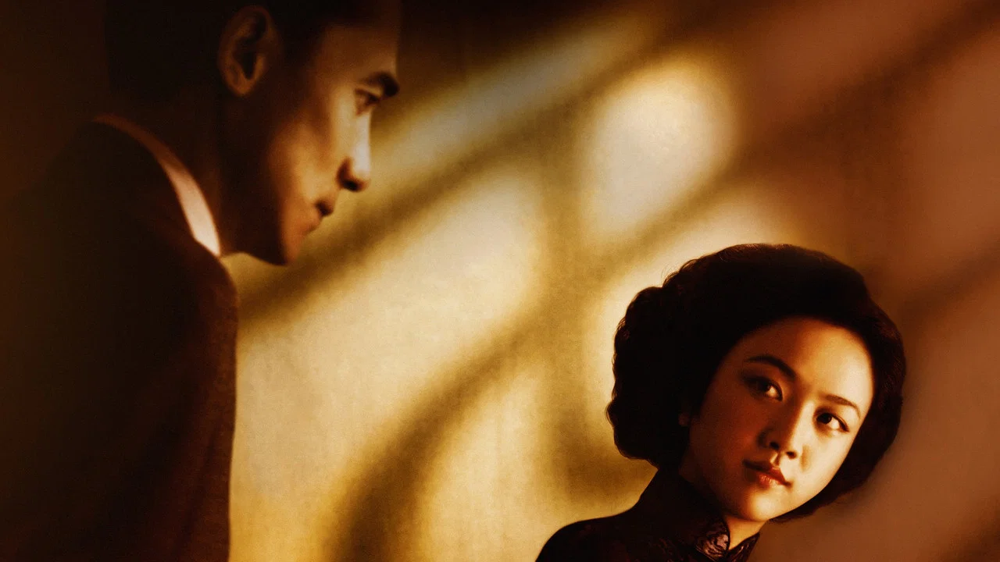
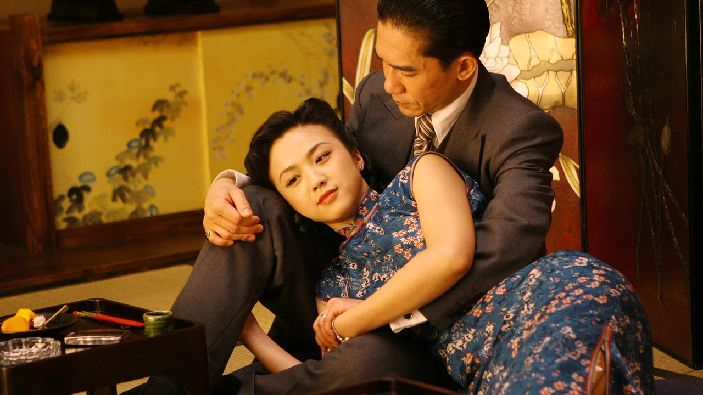
导演与主创 · 他们的历史作品

 少年派的奇幻漂流
少年派的奇幻漂流 断背山
断背山 绿巨人浩克
绿巨人浩克 双子杀手
双子杀手
 尚气与十环传奇
尚气与十环传奇 花样年华
花样年华 英雄
英雄 2046
2046
 分手的决心
分手的决心 骇客交锋
骇客交锋 地球最后的夜晚
地球最后的夜晚 梦境
梦境短评（轻微剧透）
轻微剧透：全片最狠的一笔是那枚钻戒——易先生把最罕见的六克拉粉钻递给她的时候，她看见的是「这个人也有真心」，而观众看见的是整场刺杀计划就此悬停。轻微剧透：李安全片都在问「演到第几遍会变成真的」，结尾她在放走他之后走出珠宝店，街上特务站定的位置和话剧舞台的走位一模一样——这一笔把整部片收进了第一场戏的那句台词里。王佳芝不是在爱情与任务之间选了爱情，她是在「继续演麦太太」和「做回王佳芝」之间，选了后者三秒钟。
为什么值得一看
想看「一场戏能被拍得多层」的人；能接受大尺度场面、节奏极慢、以及它本质上是一部关于「假身份怎么长出真心」的残酷寓言的观众。限制级，仅建议成年观看。内地公映删减版，完整版需另找渠道。看完想继续：《花样年华》（梁朝伟）、《断背山》（李安，往期第 39 期）、张爱玲原著。
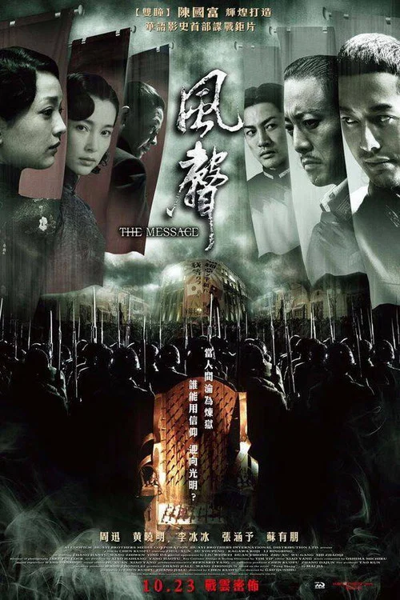
风声 The Message
「我亲爱的人，我对你们如此无情，只因民族已到存亡之际，我辈只能奋不顾身，挽救于万一。」
剧情梗概
1942 年，汪伪政权接连遇刺。一次酷刑审问之后，特务处长王田香得到一条情报：代号「老鬼」的中共地下党就在剿匪司令部那栋小楼里，而且马上就要把情报送出去。日军特务机关长武田把五个嫌疑人关进裘庄：译电科顾晓梦、军机处李宁玉、司令侍从官吴志国、机要秘书白小年、剿匪大队长金生火。酷刑、试探、互相撕咬——老鬼只需要再传出一条消息，而其他四个人里，每一个都可能是他。
亮点
- 陈国富与高群书联合导演，张家鲁参与编剧，改编自麦家的同名小说——第一部真正意义上的国产商业谍战大片。
- 豆瓣 8.4（超 1000 万人评价）/ IMDb 7.3 / 猫眼 8.9：华语口碑全线高位，本期豆瓣并列第二。
- 李冰冰凭李宁玉拿到第 46 届金马奖最佳女主角；苏有朋凭白小年拿第 30 届大众电影百花奖最佳男配角；影片另获金马奖改编剧本、视觉效果、美术、造型四项提名。
- 周迅演的顾晓梦与李冰冰演的李宁玉是两种完全不同的「被困住的女人」：一个用疯癫护住秘密，一个用职业习惯护住尊严——两人那场对手戏是全片最著名的片段。
- 全片几乎只发生在一栋楼里：没有外景追车、没有枪战对垒，靠的是台词、刑罚与时间压力——这是华语电影里把「暴风雪山庄」用得最彻底的一次。
- 本片 2021 年被韩国买下改编权翻拍为《幽灵》（李海英执导，薛景求、李荷妮主演），原作的密闭审讯结构被整体平移。
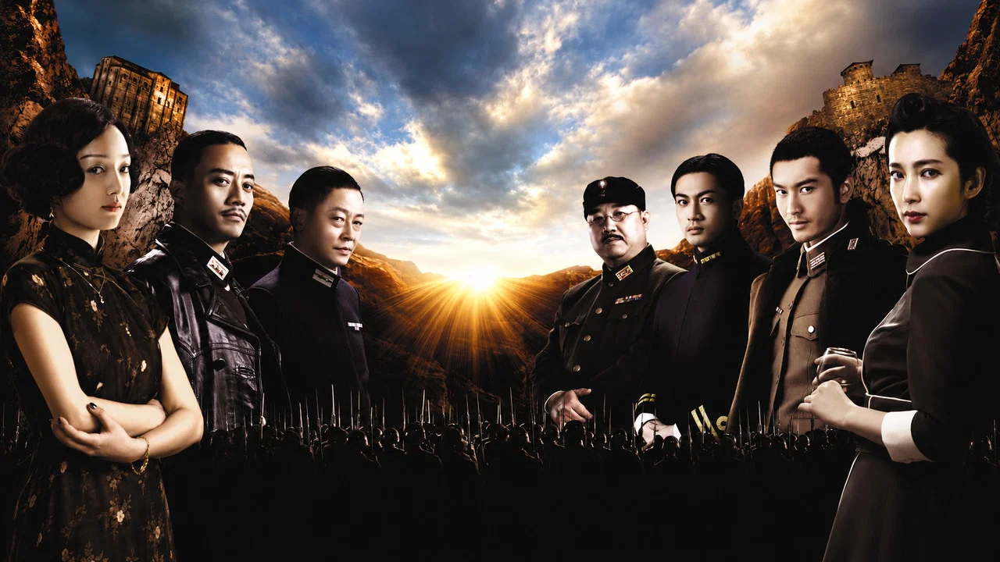
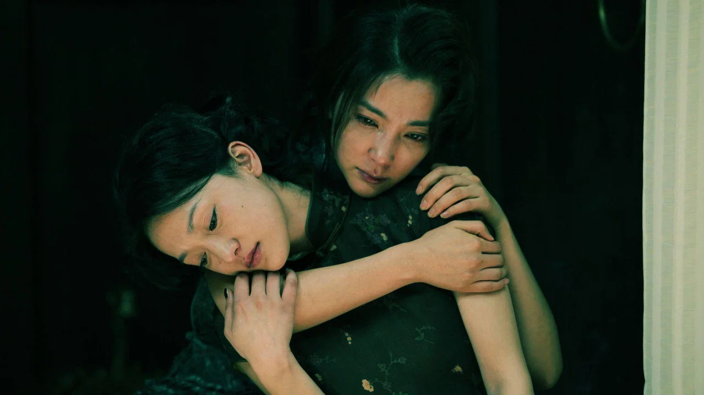
导演与主创 · 他们的历史作品

 狄仁杰之通天帝国
狄仁杰之通天帝国 狄仁杰之神都龙王
狄仁杰之神都龙王 太极1：从零开始
太极1：从零开始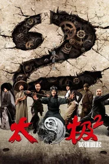
太极2：英雄崛起
 云图
云图 苏州河
苏州河 龙门飞甲
龙门飞甲 苏乞儿
苏乞儿
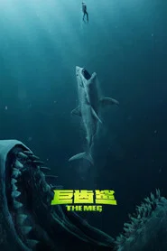
巨齿鲨 变形金刚4：绝迹重生
变形金刚4：绝迹重生 生化危机5：惩罚
生化危机5：惩罚 功夫之王
功夫之王短评（轻微剧透）
轻微剧透：全片的真正转折是「老鬼是谁」这个问题本身——它逼着五个人互相出卖，而观众跟着裁掉的每一个人，都在缩小「谁还可能是老鬼」的范围。轻微剧透：陈国富与高群书最狠的一处是把信仰拍成体力活：那件缝着摩斯电码的衣服，比任何一场刑讯都更接近这个人是谁。结尾裘庄里的灯一盏盏灭掉，留下的那段独白不是遗言，是收件人姓名。
为什么值得一看
想看「密闭空间里只有台词和眼神的悬疑能被推到多满」的人；能接受酷刑场面直接、群像戏份分配不均、以及它本质上是一部主旋律商业片却把悬念做到了最后一分钟的观众。建议高中以上观看。内地公映过，流媒体可看。看完想继续：《看不见的客人》（往期第 13 期）、《利刃出鞘》（往期第 13 期）、《幽灵》（韩版翻拍）。
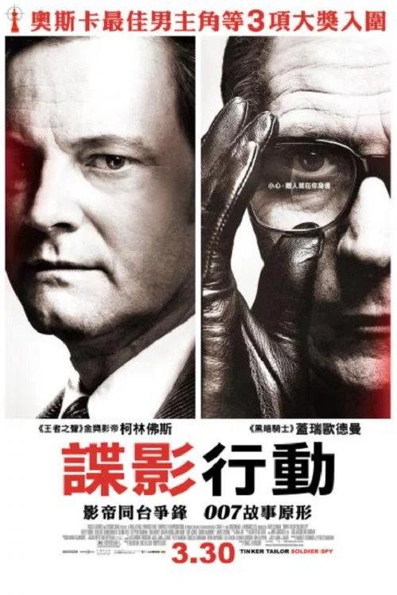
锅匠，裁缝，士兵，间谍 Tinker Tailor Soldier Spy
「你是怎么找到一个就藏在眼前的人的呢？」
剧情梗概
冷战年间，英国情报机关「圆场」的最高层里有一个苏联鼹鼠，代号出自老总给五个怀疑对象起的花名：锅匠、裁缝、士兵、穷人、乞丐。布达佩斯的一次行动失败之后，老总被扫地出门、含恨而死，接替者把脾气发在了退休的乔治·史迈利身上——直到白厅私下请他回来，不动声色地找出那个人。没有枪、没有追车，史迈利翻的是档案、记忆，和一整层楼的沉默。
亮点
- 托马斯·阿尔弗莱德森导演——拍出瑞典版《生人勿进》的那位，本片是他的第一部英语长片；编剧由布里奇特·奥康纳与彼特·斯特劳恩担任，改编自约翰·勒·卡雷 1974 年的同名小说。
- 成本约 3000 万美元，全球票房约 8150 万美元；第 84 届奥斯卡三项提名：最佳男主角（加里·奥德曼）、最佳改编剧本、最佳原创配乐；英国电影学院奖拿下最佳英国影片与最佳改编剧本。
- 加里·奥德曼演的史迈利是全片的心脏：一个被妻子背叛、被同僚排挤、戴着厚眼镜的胖男人，靠沉默把一屋子聪明人全问倒了；这也是奥德曼第一次拿到奥斯卡影帝提名。
- 科林·费尔斯演的比尔·海顿、汤姆·哈迪演的里奇·塔尔、约翰·赫特演的 Control、本尼迪克特·康伯巴奇演的彼得·吉勒姆——本期卡司密度最高的一部，几乎每个配角都拿得出一整条人物线。
- 全片的信息几乎全部藏在档案、照片、电话和一次眼科检查里；霍伊特·范·霍特玛的摄影把 1973 年的伦敦拍成一片棕灰色的雾。
- 豆瓣 7.9 / 烂番茄 84% / Metacritic 85 / IMDb 7.0：Metacritic 85 是本期专业评价最高的一部，而 IMDb 只有 7.0——慢节奏间谍片在观众端的天然折损。
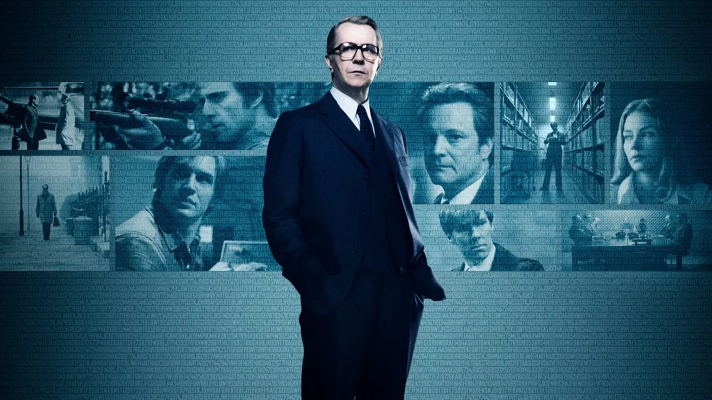
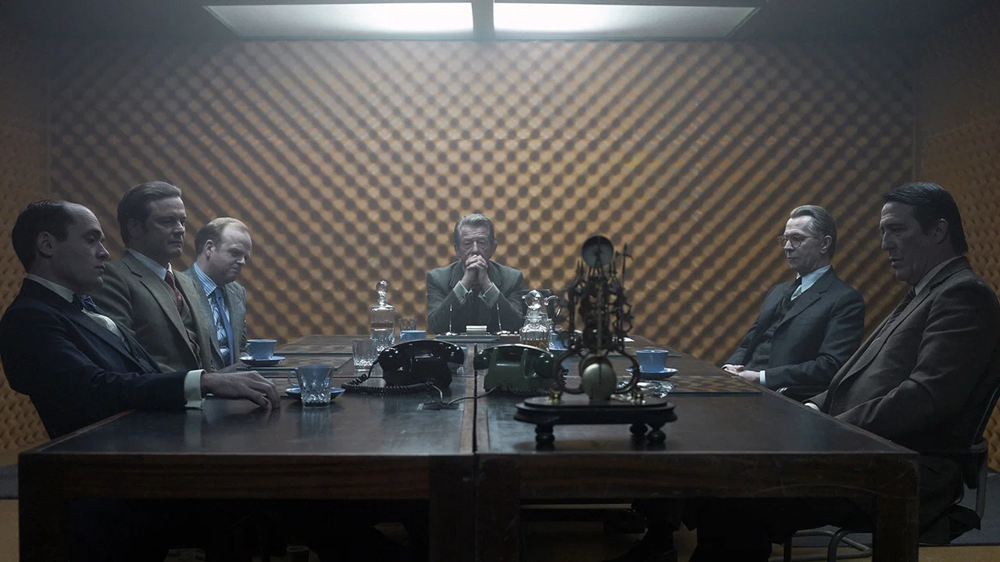
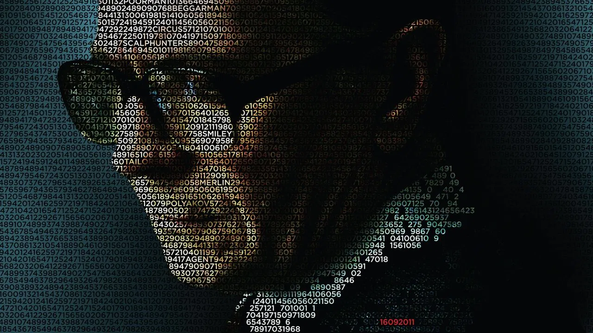
导演与主创 · 他们的历史作品

 雪人
雪人 蝙蝠侠：黑暗骑士崛起蝙蝠侠：黑暗骑士
蝙蝠侠：黑暗骑士崛起蝙蝠侠：黑暗骑士 惊情四百年
惊情四百年 至暗时刻
至暗时刻
 国王的演讲
国王的演讲 王牌特工：特工学院
王牌特工：特工学院 王牌特工2：黄金圈
王牌特工2：黄金圈 BJ单身日记
BJ单身日记短评（轻微剧透）
轻微剧透：全片的答案是通过一份借阅记录、一次通话和一副眼镜找到的——而找到的那一刻没有音乐、没有特写，只有史迈利回到家，把枪放在桌上。轻微剧透：阿尔弗莱德森最残忍的一处，是让「最可能叛变的人」恰好也是最有魅力的人：海顿的每一次现身都在解释为什么体制更喜欢他而不是史迈利。结尾史迈利坐上圆场主任的位置，观众却笑不出来——抓到了鼹鼠，输掉的是整代人对那个体制的信任。
为什么值得一看
想看「没有动作片的悬疑片能把张力做多满」的人；能接受大量英式冷幽默与术语、人物多达十几个、以及它要求你像史迈利一样自己拼图（不建议倍速观看）的观众。R 级。内地未映。看完想继续：《生人勿进》（导演前作）、《慕尼黑》、《谍影重重3》。
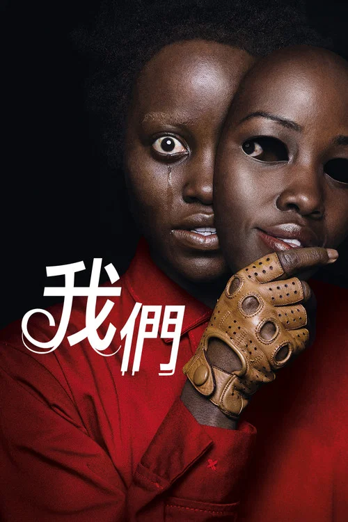
我们 Us
「我们也是美国人。」
剧情梗概
1986 年，加州圣克鲁斯的海滨游乐场，小女孩阿德莱德在镜子屋里走散，遇见了另一个和自己一模一样的女孩。多年后，她带着丈夫和两个孩子回到故地度假，当晚，车道上站了四个穿红衣服的人——他们和威尔逊家四口一一对应，而且只会用剪刀说话。他们是被拴在地下的人，现在上来了。
亮点
- 乔丹·皮尔第二部长片（前作《逃出绝命镇》拿过奥斯卡最佳原创剧本）。成本约 2000 万美元，全球票房约 2.56 亿美元；首周末 7100 万美元，刷新 R 级原创恐怖片纪录（当时仅次于《小丑回魂》与新版《月光光心慌慌》）。
- 露皮塔·尼永奥一人分饰两角：地上的阿德莱德与地下的「红」——两种口型、两种体态、两种活法，是她职业生涯最累的一次演出。
- 皮尔把 1986 年「携手穿越美国」公益活动写进核心设定：那些被忘掉的穷人，就是地下的复制品——恐怖片的外壳里装的还是阶级寓言。
- 迈克尔·阿贝尔的配乐是全片第二主角：从安静的小提琴到尖啸，被影迷列进近十年最有效的恐怖片配乐。
- 烂番茄 93% / Metacritic 81 / IMDb 6.8 / 豆瓣 6.4：本期专业评价与华语观众评价落差最大的一部——海外影评人几乎一致称赞，华语观众的差评则大量集中在「看不懂想表达什么」。
- 彩蛋与伏笔密度极高：兔子、镜屋、耶利米书 11 章 11 节、那句被反复引用的「我们也是美国人」——第一遍看完建议直接看解析，第二遍完全是另一部电影。
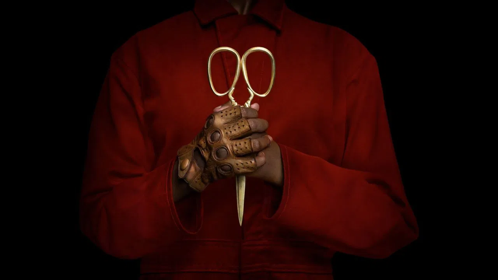
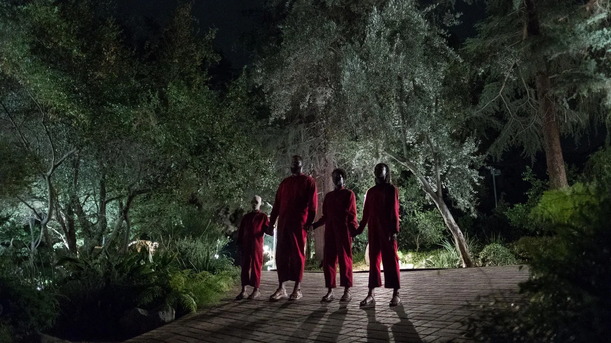
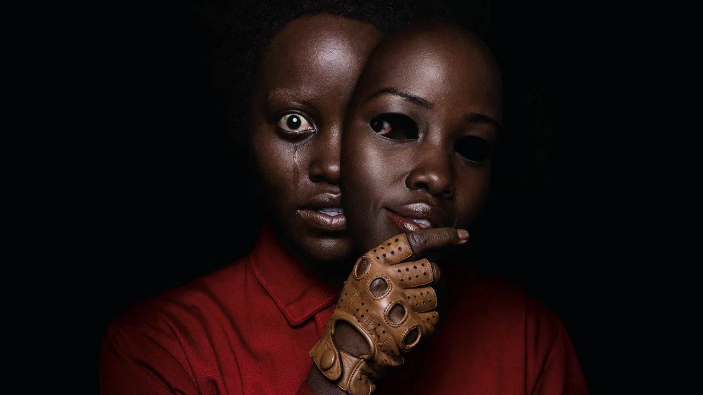
导演与主创 · 他们的历史作品

 玩具总动员4
玩具总动员4 基努猫
基努猫 逃出绝命镇
逃出绝命镇 逗鸟外传：萌宝满天飞
逗鸟外传：萌宝满天飞
 黑豹
黑豹 荒野机器人
荒野机器人 为奴十二年
为奴十二年 寂静之地：入侵日黑豹
寂静之地：入侵日黑豹 黑豹2
黑豹2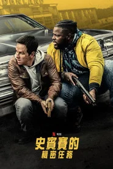
斯宾塞的机密任务 复仇者联盟3：无限战争
复仇者联盟3：无限战争短评（轻微剧透）
轻微剧透：全片最大的反转是「活在地上的那个才是假的」——镜子屋里被替换过的阿德莱德，用一生在逃那个本该属于自己的位置。轻微剧透：皮尔最狠的一笔是让「红」最终赢：她坐上沙发看着孩子们的那一刻，恐怖的不是她赢了，是观众发现自己有点理解她。结尾人链横跨海岸那一幕，是把整部片的寓言直接摊开——只是这一次，手没有牵到地底下那些人。
为什么值得一看
想看「恐怖片能把社会寓言埋多深」的人；能接受突发惊吓密度不低、结局刻意不给爽感、以及它要求观众接受一套相当玄的设定的观众。R 级，血腥与惊吓场面密集，建议成年观看。内地未映。看完想继续：《逃出绝命镇》（往期第 30 期）、《不》（往期第 11 期）、《寄生虫》（往期第 33 期）。
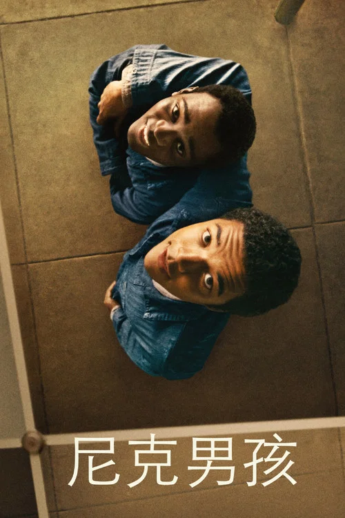
五分钱男孩 The Nickel Boys
「你不是不记得了。你只是不肯记。」
剧情梗概
1962 年的佛罗里达，黑人少年埃尔伍德·柯蒂斯是全家最有出息的孩子：成绩好、不惹事，卧室墙上贴着民权运动领袖的照片。一次他搭了一辆不该搭的便车，被判进「五分钱学院」——一所对外宣称「教男孩们重新做人」的少年管教所。那里的夜晚有殴打、有贩卖、有无名坟场。他和另一个男孩特纳成了彼此的依靠；而埃尔伍德始终不肯相信，这个地方会吃掉他。
亮点
- 拉梅尔·罗斯导演并与乔斯琳·巴尼斯联合编剧，改编自科尔森·怀特黑德 2019 年的普利策奖小说——这是他的第一部叙事长片，之前那部纪录片《黑尔郡的日与夜》拿过奥斯卡最佳纪录长片提名。
- 第 97 届奥斯卡最佳影片与最佳改编剧本双提名；纽约影评人协会奖 2024 年度最佳影片第一名；金球奖剧情类最佳影片提名；另在美国导演工会奖拿下最佳院线电影首作导演。
- 摄影是这部片最大的签名：乔莫·弗雷的大量第一人称视角让观众只能「成为」这两个男孩——你看不见自己的脸，只能看见他们看见的一切。
- 影片的第二个主角是「档案」：真事改编（佛罗里达州的亚瑟·G·多齐尔少年学校，2010 年代被挖出数十座无名坟），片尾直接放出了真实调查的影像。
- 烂番茄 92% / Metacritic 91 / IMDb 6.9 / 豆瓣 6.3：专业评价全线高位（Metacritic 91 为本期第二高），而豆瓣只有 6.3，是本期落差最大的一部——差评集中在叙事形式「闷」与「实验性」。
- 布拉德·皮特任制片（Plan B 公司），成本约 2320 万美元，全球票房约 300 万美元——典型的颁奖季小片发行路径，颁奖季后上流媒体。
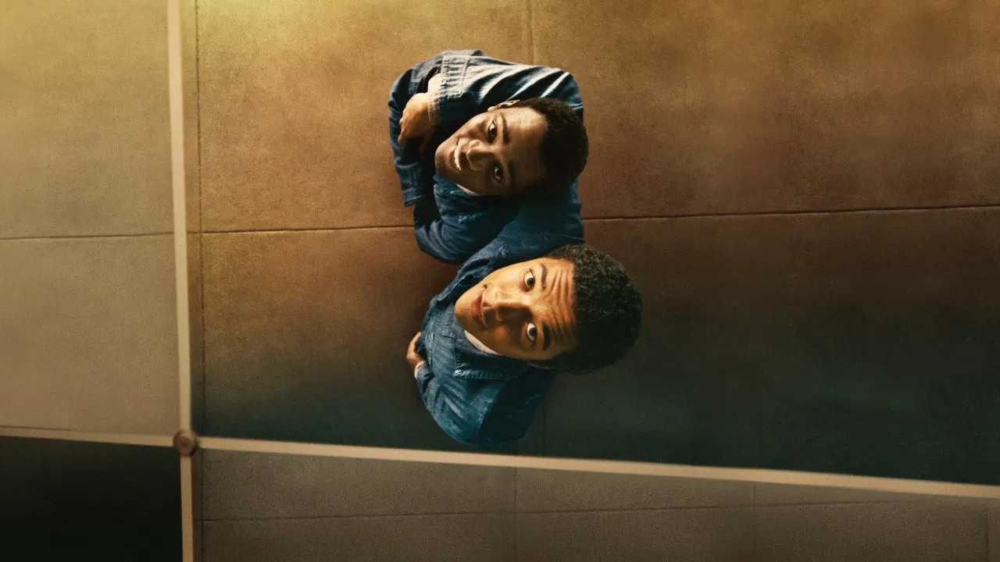
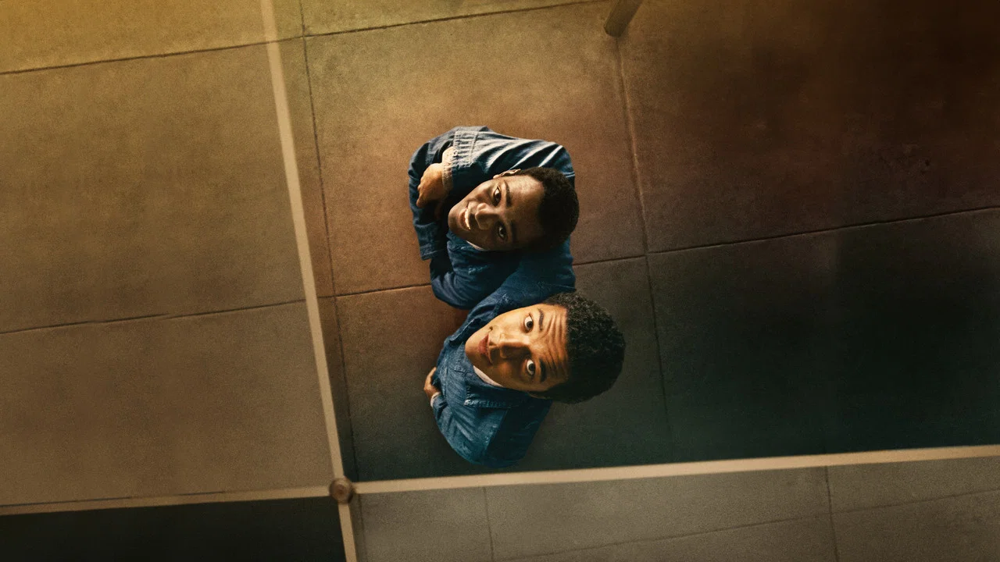
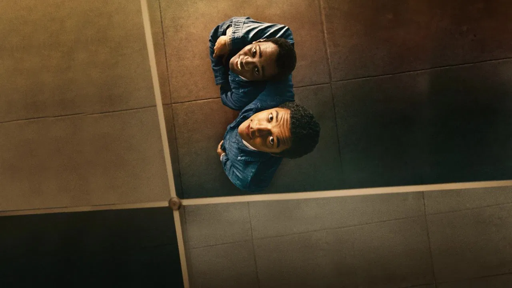
导演与主创 · 他们的历史作品
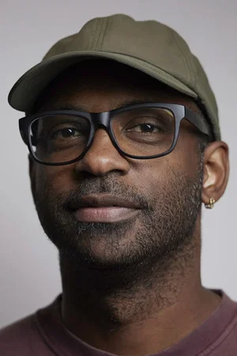
 揭秘日
揭秘日短评（轻微剧透）
轻微剧透：全片最重的一笔在结尾字幕之前——特纳逃出去了，用的是埃尔伍德的名字。轻微剧透：罗斯最狠的一处是把「身份」做成遗产：一个男孩死了，另一个男孩替他活，而活下来的那个必须每天证明自己配得上这个名字。片尾真实调查影像与虚构故事并置的那一刻，观众才明白前面所有的「闷」，都是对那段历史最基本的尊重。
为什么值得一看
想看「历史题材能被拍得多不套路」的人；能接受第一人称视角带来的晕眩感、节奏极慢、以及它本质上是一部关于「一个男孩的名字怎么活下来」的残酷电影的观众。PG-13，含有虐待与种族暴力描写，建议成年观看。内地未映，流媒体可看。看完想继续：《黑尔郡的日与夜》（导演前作）、《为奴十二年》（往期第 34 期）、《月光男孩》（往期第 33 期）。